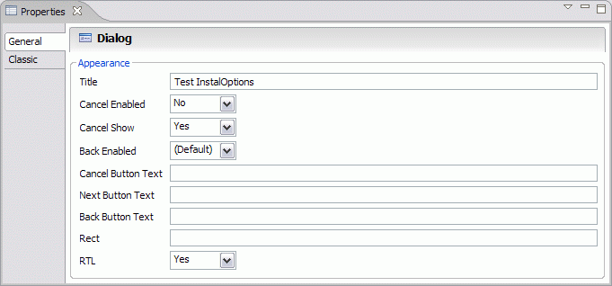
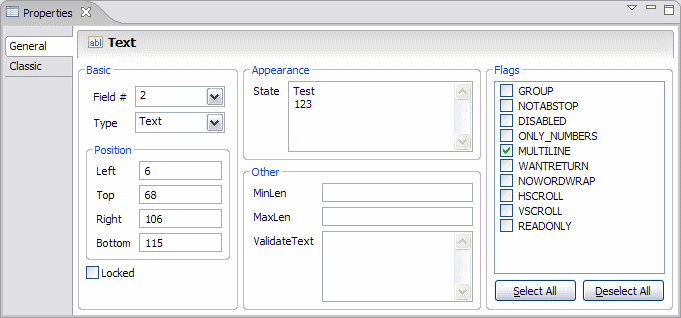
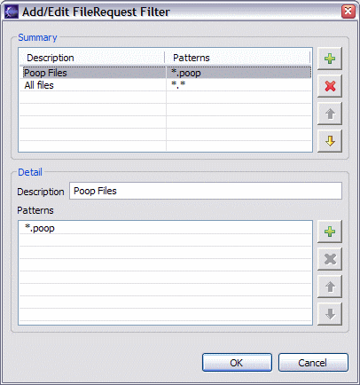
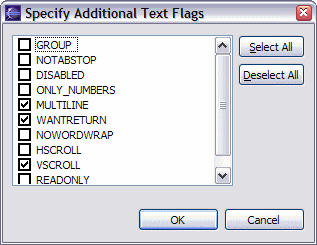
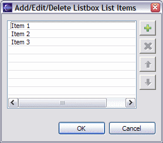
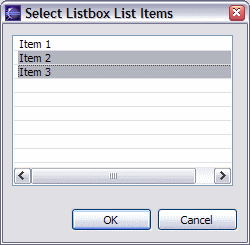
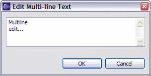
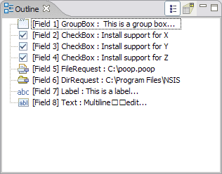
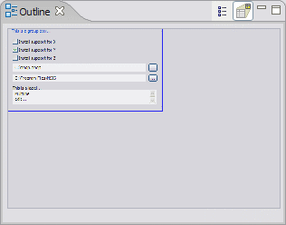

Creating and Modifying InstallOptions Controls
InstallOptions controls can be created on the design editor canvas in several ways:
- From the palette Controls Drawer - By either a) clicking on a control in the palette drawer and then clicking on the desired location on the canvas (click and drag the mouse to set the control size), b) directly dragging a control from the palette drawer to the desired location on the canvas.
- From the palette Templates Drawer - By either a) clicking on a template in the palette drawer and then clicking on the desired location on the canvas (click and drag the mouse to set the size), b) directly dragging a template from the palette to the desired location on the canvas.
- From the Clipboard - Select one or more existing controls in either the current or a different InstallOptions script, and copy them using the menu Copy command or by pressing Ctrl+C. The copied controls can then be pasted using the menu Paste command or by pressing Ctrl+V.
- Clone Existing Controls - Select one or more existing controls in the current InstallOptions script. Then, while pressing the Ctrl key, drag the selected controls to the desired location on the canvas. Copies of the selected controls will be created at this location.
Once created, the settings of the controls can be modified using the Properties view. Some settings can be updated directly on the design editor canvas using Direct and Extended edit. Additionally, one or more selected controls can be enabled or disabled directly from the right-click popup context menu. This is equivalent to removing or adding the DISABLED flag, respectively.
- Properties View
The Eclipse Properties view displays setting names and values for the selected control on the design editor canvas. If no control is selected, the settings for the InstallOptions dialog itself are displayed. If the Properties view is not open in the current perspective, it is opened and activated. If it is opened, but inactive, it is activated.

InstallOptions Dialog Settings
Sample Control SettingsBeginning with InstallOptions 0.9.5, the settings editor is form based. The classic (or tabular) settings editor can still be accessed by clicking on the "Classic" tab in the Properties view (click on the images above to preview the classic tab).
- Form Based
- In the form based settings editor, the various settings are logically grouped and can be directly modified. Settings which are modified using checkboxes, radio buttons and combo boxes are immediately applied, while settings which are modified using text boxes are applied either when text box loses focus or when the Enter key is pressed (Ctrl+Enter for multiline text boxes).
- Classic (or Tabular)
- In the classic (or tabular) settings editor, if a setting is user
editable, then clicking on the setting value in the Properties view
enables the user to edit the value. In most cases, the value is
modifiable directly in the Properties view- either by editing its text
or by selecting a value from a dropdown list. In some cases, however,
the value can only be edited in a separate popup dialog. These cases are described
below:
Control Setting Dialog FileRequest Filter This dialog is used to define a set of one or more filters for the FileRequest control. Each filter consists of one or more file patterns. These patterns are in the form of standard Microsoft file name wildcards. The summary section in the dialog lists the filters currently defined. This list may be used to create, delete or reorder filters. A filter may be edited by clicking on it in the summary table, which loads the filter into the detail section. The patterns may be edited in the detail section by directly clicking on them and entering the desired pattern text in-place.
All Flags This dialog is used to choose the flags to apply to the selected control. Only the flags which are valid for the selected control will be available in this dialog.DropList
Combobox
ListboxListItems This dialog is used to specify a list of items for the selected control. Items may be added, deleted or rearranged in this dialog. An item can be edited be clicking on it and typing the desired text in-place.Listbox State This dialog is used to choose the selected items for the Listbox control. If either the MULTISELECT or EXTENDEDSELCT flags are specified, then this dialog allows multiple selections, otherwise only a single selection is allowed.Label Text This dialog is used to enter multiline text for controls which support it. In case of Text controls, this dialog is only available if the MULTILINE flag has been specified.Text State Link TxtColor The standard Windows color selection dialog is displayed.
- Direct and Extended Edit
The design editor permits the editing of some settings in-place on the canvas. These are accomplished using the Direct edit and Extended edit features. Direct edit is enabled when a single mouse click is performed on a selected control. Extended edit is enabled when a double click is performed on a control- whether it is selected or not. These features are also available from the right-click popup context menu on the canvas when a single control is selected. The table below lists settings which may be edited using Direct edit or Extended edit.
← BackControl Direct Edit Setting Extended Edit Setting Label Text -- Text State -- Password State -- Combobox State ListItems DropList State ListItems Listbox State ListItems CheckBox Text State RadioButton Text State FileRequest State Filter DirRequest State -- GroupBox Text -- Link Text TxtColor Button Text --
Outline and Overview
The design editor includes an outline view for the InstallOptions script currently being edited. It offers two depictions:
 - A list of controls in the
script. In this view, controls can be deleted or rearranged. Selecting
one or more controls in this view also selects them on the design
editor canvas.
- A list of controls in the
script. In this view, controls can be deleted or rearranged. Selecting
one or more controls in this view also selects them on the design
editor canvas. - An overview which shows a thumbnail image of the design editor canvas.
- An overview which shows a thumbnail image of the design editor canvas.
|  Outline List |
 Outline Overview |
Previous | Contents | Next
Copyright © 2004-2010 Sunil Kamath (IcemanK).